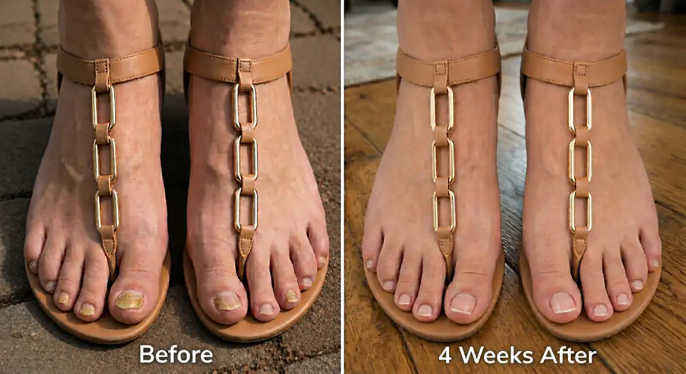
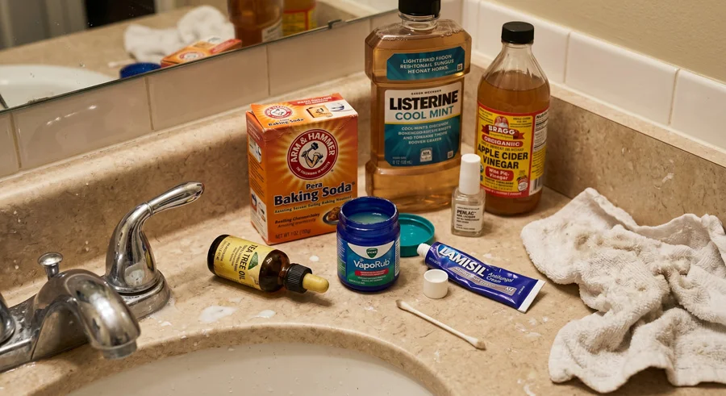
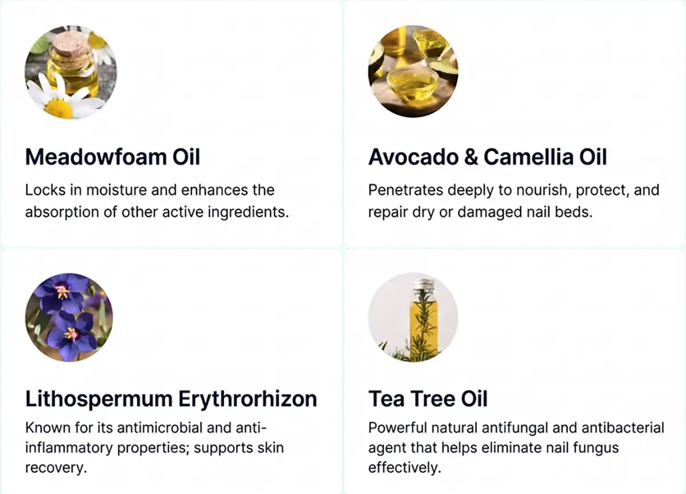
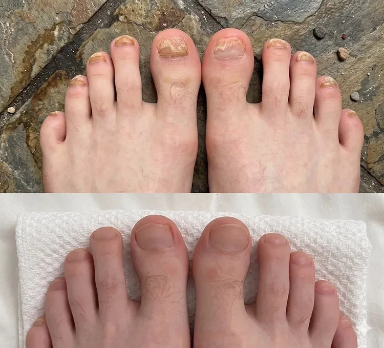
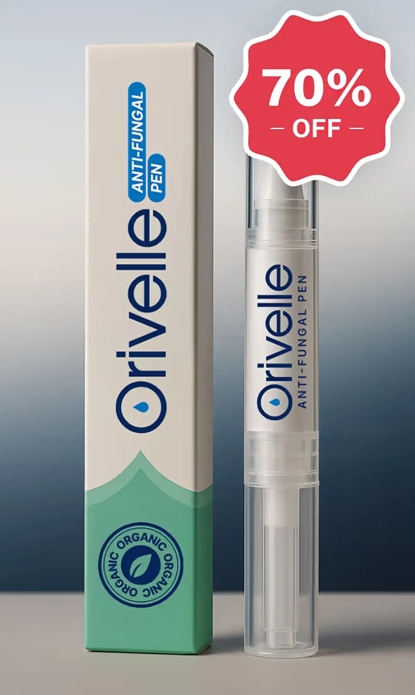

Min läkare sa att det skulle taupp till ett åratt behandla min envisa nagelsvamp. Jag fixade det på 4 veckor medDETTA
Jag provade 9 olika "kurer" under 5 år, och svampen kom ALLTID tillbaka. Jag har nu varit svampfri i över 18 månader – och lösningen var pinsamt enkel! Jag ska visa dig exakt vad jag gjorde.

Jag heter Kajsa, jag är 37 år, och under 5 år hade jag pinsam nagelsvamp som jag inte kunde bli av med.
Jag tror att jag fick det från en pedikyr på en nagelsalong. Jag ignorerade det i ett par år och tänkte att det skulle gå över av sig självt …
Men det gjorde det inte.
Istället spred det sig till nästa tå, sen nästa, tills jag inte längre kunde låtsas som ingenting. Jag var förfärad.
Det kändes hemskt att titta ner på mina egna fötter – det fick mig att känna mig smutsig.
Hela mitt liv började kretsa kring att gömma mina fula fötter. På stranden grävde jag ner dem i sanden så att ingen skulle se. Hemma bar jag strumpor året runt …
Jag hoppade över pedikyrer med vänner och hittade på ursäkter. Jag valde varje outfit utifrån vilka skor som täckte tårna – aldrig de söta sandalerna med öppen tå som jag egentligen ville ha.
Att fixa mina naglar blev en besatthet, så jag tillbringade de kommande 5 åren med att prova ALLT.
Och om du någonsin har googlat "hur man botar nagelsvamp" så vet du vad jag pratar om …
Det finns hundratals "lösningar". Husmorskurer. Piller. Morgonrutiner i 20 steg som man förväntas följa innan man ens tar på sig skorna.
Det är ett heltidsjobb bara att försöka hänga med!
Och det som är grejen med nagelsvamp är att man fastnar i en ond cirkel. Man hör talas om en "ny spännande lösning". Man provar den. Det fungerar i några veckor. Sen kommer svampen tillbaka.
Varje. Enda. Gång.
Det är knäckande. Efter ett tag börjar man tro att den här saken bara kommer att leva med en för alltid.
Men den goda nyheten är … att det inte behöver vara så.
Det FINNS en sak som äntligen fungerade för mig –den rensade mina naglar på veckor, inte år,och jag gjorde det på bara några sekunder varje morgon hemifrån.
Så jag ska gå igenom allt jag provade, vad som misslyckades och varför, så att du kan hoppa över 5 år av vilseledande råd och gå direkt till det som faktiskt kan fixa din nagelsvamp snabbt – och för gott.

De tillfälliga lösningarna som låter svampen komma tillbaka (slösa inte din tid på dessa)
Så jag gick till min husläkare, och hon sa att det skulle ta ungefär ett år att bota min svamp.
Det första hon skrev ut varTerbinafin–och det fungerade faktiskt. Svampen försvann synligt, mina naglar började se nästan normala ut igen, och jag blev så glad och trodde att det var över.
Herregud, vad fel jag hade!
Mindre än 2 veckor efter att jag avslutat pillerkuren kom de gula ränderna smygande tillbaka över min stortå. Jag satt på badkarskanten och grät.
Det var då jag började prova allt annat …
Tea tree-olja–Varje tråd på Flashback, varje inlägg på Familjeliv och varje Google-resultat svor på det. Jag spädde ut det med kokosolja som forumen sa, baddade på det två gånger om dagen med en bomullspinne och var jättenoga i 4 månader. Mina naglar såg lite bättre ut. Sen åkte jag iväg över en långhelg, hoppade över det i 3 dagar, och när jag kom hem hade svampen kommit tillbaka med full kraft.
Vicks VapoRub.Det mjukade upp mina naglar och jag trodde verkligen att det fungerade. Sen tittade jag ner en morgon och märkte att svampen hade spridit sig till en tredje tå.
Fotbad med äppelcidervinäger.20 minuter varje kväll, varje kväll, i 6 veckor. Mitt badrum luktade som ett gatukök. Naglarna såg lite bättre ut först, sen hände inget mer, och sen blev det sämre.
Antifungala krämer från apoteket–Canesten, Daktarin, Lamisil kräm –jag använde det troget varje kväll. På etiketten stod det "resultat på 4 veckor". För mig var resultatet: absolut ingenting.
Listerine-bad–Ännu ett "mirakel" från nätet. 2 månader med detta. Allt jag fick ut av det var blå fötter och ett badrum som luktade som en tandläkarmottagning.
Bikarbonat-pasta.Efter tre veckor hade jag irriterad hud, ingen förbättring, och jag vaknade med bikarbonat i lakanen.
Laserbehandlingpå en privatklinik i stan. 2 800 kr per tillfälle. Jag spenderade över 11 000 kr. Svampen försvann med ca 60 % efter hela kuren. Sex månader senare var jag tillbaka där jag började.
Receptbelagt nagellacksom man målar på varje dag i upp till 48 veckor. Jag stod ut i 8 månader. Svampen drog sig tillbaka i ca 6 veckor någonstans i mitten. Sen kom den tillbaka.
Varje gång något misslyckades fick jag höra samma sak –"ge det mer tid, var mer konsekvent, du måste hålla ut."
Men jag kunde inte föreställa mig att spendera resten av mitt liv med att ta ett piller som gjorde mig illamående, eller smörja saker på mina tånaglar varje eviga dag.
Det måste finnas något bättre. Något som faktiskt fungerade snabbt och hindrade svampen från att komma tillbaka.
Och jag hittade det.
Under mitt sökande efter en riktig lösning blev jag hänvisad till en holistisk hudexpert i Stockholm – Dr. Kristina Foster – som hade haft enorm framgång med att behandla envisa fall av hud- och nagelsvamp.
Två veckor senare satt jag på hennes kontor.
Hon började med att förklara något jag aldrig hade hört förut: svamp är så svårt att döda eftersom den inte leverpådin nagel –den levermellannageln och nagelbädden.
Vilket betyder att varje utvärtes behandling jag hade provat – tea tree-oljan, Vicks, Lamisil, äppelcidervinäger – var tvungen att tränga igenom tjockt keratin – det stenhårda proteinlagret som din nagel är gjord av – för att ens nå svampen.
Och tabletterna måste färdas hela vägen genom ditt blodomlopp och in i de pyttesmå kärlen vid basen av din nagel innan de ens kan börja döda den.
Båda är otroligt svåra att lyckas med. Vilket är exakt varför dessa behandlingar verkar fungera först – de dödar den svaga ytsvampen du kan se. Men de resistenta stammarna som ligger begravda djupt i nagelbädden överlever, förökar sig och kommer tillbaka starkare än tidigare.
Och även när en av dessa behandlingar fungerar är det nästan omöjligt att göra det perfekt. Standardprotokollen kräver månader – ibland år – av perfekt disciplin. Missar du några dagar är du tillbaka på noll.
För första gången på 5 år blev varje misslyckande plötsligt logiskt.
"Så det du faktiskt behöver," sa Dr. Foster, "är två saker som samverkar."
- Först – ett leveranssystem som faktiskt kan tränga igenom nagelplattan. Det betyder oljebaserat, inte vattenbaserat. Olja är ett av de få ämnen som passerar genom keratinbarriären och når nagelbädden undertill.
- Och för det andra – rätt antifungala föreningar inuti den oljan. Den exakta kombinationen av botaniska ingredienser som samverkar för att:
- Tränga igenom även de tjockaste naglarna
- Bekämpa svamp vid roten (inte bara på ytan)
- Hjälpa till att återställa nagelns naturliga försvarssystem
- Hjälpa till att förhindra återinfektion permanent
Hon öppnade en låda i sitt skrivbord och räckte mig lösningen som skulle fixa 5 års kamp på bara 4 veckor.

Möt Orivelle: Den växtbaserade nagelpennan som eliminerar nagelsvamp för gott
Orivelle innehåller 14 kraftfulla botaniska ingredienser – var och en utvald för en specifik roll i att döda svamp, återställa skadade naglar och skydda huden runt dem.

PlusC-vitamin, pepparmynta, rapsolja, druvkärneolja, sötmandelolja, sheasmör, chilensk hasselnötsolja, jojobaolja, nattljusolja och nyponolja–alla dessa kraftfulla föreningar samverkar för att bygga upp spröda, gula och spruckna naglar till friska och vackra naglar.
Orivelle dödar inte bara svampen. Den återställer allt som svampen förstörde.
Vad som gör Orivelle annorlunda:
Krämer:Sitter på ytan, kan inte tränga igenom nageln
Piller:Angriper din lever, fungerar bara i 17 % av fallen
Husmorskurer:För svaga, inkonsekventa resultat
Orivelle:Tränger igenom hela nageln, bekämpar svamp vid roten och hjälper till att förhindra att den kommer tillbaka
"Jag kan bära sandaler igen!" – Riktiga berättelser från riktiga människor
Margareta K.
 Verifierad köpare
Verifierad köpare
“Jag är 67 år och hade nagelsvamp i 12 år. TOLV ÅR! Provade allt inklusive de där hemska pillren som gjorde mig sjuk. Min dotter hittade Orivelle på nätet och köpte den åt mig. Inom 2 veckor slutade mina naglar nästan helt att smula sönder. Vid vecka 4 kunde jag se rosa, frisk nagel växa ut från basen. Nu efter 3 månader är mina naglar nästan helt fina för första gången på åratal! Jag har precis bokat en pedikyr – något jag inte har gjort på över ett decennium. Tack!”

FÖRE – EFTER (8 VECKOR) · *Individuella resultat kan variera. Margareta K., verifierad kund
Linda M.
Verifierad köpare
"8 års nagelsvamp borta efter 6 veckors behandling"
Jag är SÅ glad!! Vid vecka 6 såg mina tånaglar rena och normala ut igen. Jag gick ut och köpte 3 nya par sandaler förra helgen.

Markus D.
Verifierad köpare
"Framgång med Orivelle på bara 2 månader!!!"
Naglarna växer ut rosa och normala vid basen, inget mer gult, ingen mer förtjockning. Jag kollar hela tiden för jag kan inte fatta att det faktiskt är borta. Kan inte rekommendera detta nog.

Ledande fotterapeuter rekommenderar diskret detta till sina patienter
“Jag har varit fotterapeut i 18 år. När patienter började visa mig sina Orivelle-resultat var jag skeptisk. Men förbättringen var obestridlig. Jag rekommenderar det nu till patienter som inte kan ta orala mediciner eller har återkommande infektioner. Framgångsgraden är anmärkningsvärd.”– Dr. James T., Stockholm
I en oberoende studie med 500 användare:
Den enkla 60-sekundersritualen som förvandlar dina naglar
Att använda Orivelle är enklare än att borsta tänderna:
- Steg 1:Rengör och torka dina naglar
- Steg 2:Applicera Orivelle med precisionspenseln (precis som nagellack)
- Steg 3:Låt torka i 60 sekunder
Gör detta två gånger dagligen. De flesta ser resultat inom 7 –14 dagar.
Ingen filning. Inget blötläggande. Inget kladd.
Jämför kostnaden: Orivelle mot traditionella behandlingar
Laserbehandling:5 000 –15 000 kr (täcks sällan av försäkring)
Receptbelagda piller:4 000 kr+ för 3 månaders kur (plus leverprover)
Besök hos fotterapeut:1 200 kr+ per besök (flera besök krävs)
Orivelle-penna:mindre än 199 kr (räcker i 30+ dagar)
Dessutom kommer Orivelle med en 30-dagars pengarna-tillbaka-garanti. Om du inte ser förbättring får du full återbetalning. Inga frågor ställs.
Mikael K.
Verifierad köpare
“Jag är diabetiker och min läkare sa att jag inte kunde ta antifungala piller. Har kämpat mot den här svampen i 5 år med krämer som aldrig fungerade. Orivelle hjälpte till att rensa mina naglar på 6 veckor! Min fru beställde 3 pennor till så att vi aldrig får slut.”
Bara för våra besökare säljs Orivelle med rabatt! Klicka på "SNURRA"-knappen och vinn en rabatt! Lycka till!
 Kontrollera tillgänglighet & aktivera rabatt →
Kontrollera tillgänglighet & aktivera rabatt →
BEGRÄNSAT lager med rabatt TILLGÄNGLIGT per:
Ta del av dittEXKLUSIVA ERBJUDANDEmed 70 % rabatt!
VARNING: Se upp för falska Orivelle-produkter på Amazon
På grund av dess popularitet har förfalskade versioner av Orivelle dykt upp online. Dessa kopior innehåller inte rätt botaniska koncentrationer och kommer inte att fungera.
Köp endast från den officiella hemsidanför att säkerställa att du får den äkta formulan med 30-dagarsgarantin.
På grund av viral spridning i sociala medier säljer Orivelle slut snabbt.
Lågt lager kvar till rabatterat pris.
Nästa leverans anländer om 3–4 veckor.
Exklusivt framtagen för alla åldrar! Välj din åldersgrupp och hitta den bästa lösningen för dig!
För ålder 60+
Klicka här för70 % rabatt!
För ålder 40 –60
Klicka här för70 % rabatt!
För ålder 20 –40
Klicka här för70 % rabatt!
Specialerbjudandet slutar snart: Spara upp till 70 %

Spara upp till 70 % idag
Som en del av sin online-kampanj erbjuder Orivelle våra svenska läsare en exklusiv rabatt:
- 1 Penna→Spara 50 %
- 3-pack pennor→Spara 60 %← BÄSTA VÄRDE
- 6-pack pennor→Spara 70 % (mindre än 100 kr per penna!)
Alla beställningar inkluderar:
- FRI frakt (ankommer på 2 –3 dagar)
- 30-dagars pengarna-tillbaka-garanti
- Nagelvårdsguide: "Rena naglar på 30 dagar"
Linda S.
Verifierad köpare
“Tveka inte! Jag slösade ÅR och TUSENTALS kronor på behandlingar som inte fungerade. Orivelle hjälpte till att rensa mina naglar på 8 veckor. Jag är 72 och bär skor med öppen tå för första gången sedan jag var i 50-årsåldern!”
Patricia Svensson
2 timmar sedan
Har precis beställt min! Min syster har använt detta i en månad och hennes naglar ser fantastiska ut. Kan inte bärga mig att få prova!
Mikael Chen
5 timmar sedan
Är detta säkert för äldre? Min mamma är 78 och har kämpat med detta i flera år.
Svar från redaktionen:Ja, Orivelle är säkert för alla åldrar. Det är helt naturligt utan starka kemikalier. Många kunder i 70- och 80-årsåldern använder det framgångsrikt!
Susanne Andersson
Igår
UPPDATERING: Har använt i 6 veckor nu. Skillnaden är otrolig! Varför hittade jag inte detta tidigare??? Har precis beställt 3 till till min man.
David Lindberg
2 dagar sedan
Rabatten fungerar fortfarande! Fick precis 3 flaskor för mindre än priset på mitt senaste recept. Tack för att ni delar detta!
Barbro Lind
3 dagar sedan
Hur lång tid tar frakten? Vill börja behandlingen så snart som möjligt.
Svar från redaktionen:Beställningar skickas samma dag och anländer inom 2-3 arbetsdagar med fri expressfrakt!
Johan Nilsson
3 dagar sedan
Jag är sjuksköterska och var skeptisk men vetenskapen är logisk. Efter 4 veckor är min stortånagel nästan helt ren. Beställer fler!